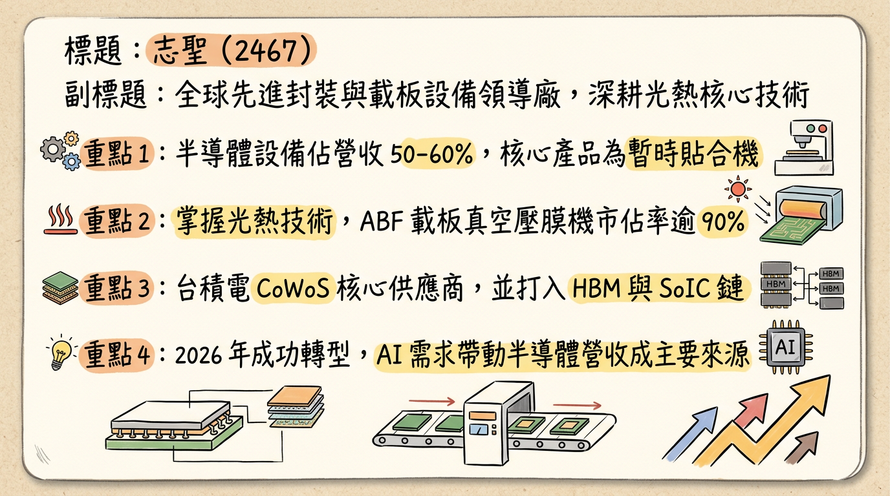
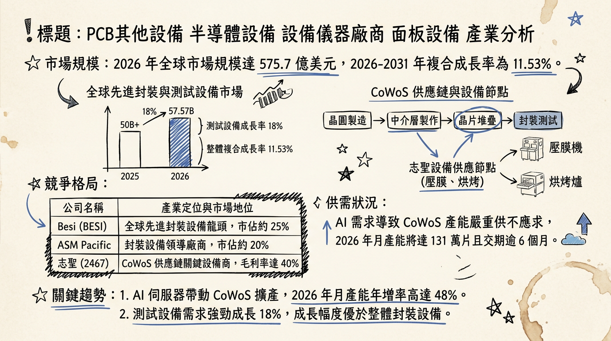
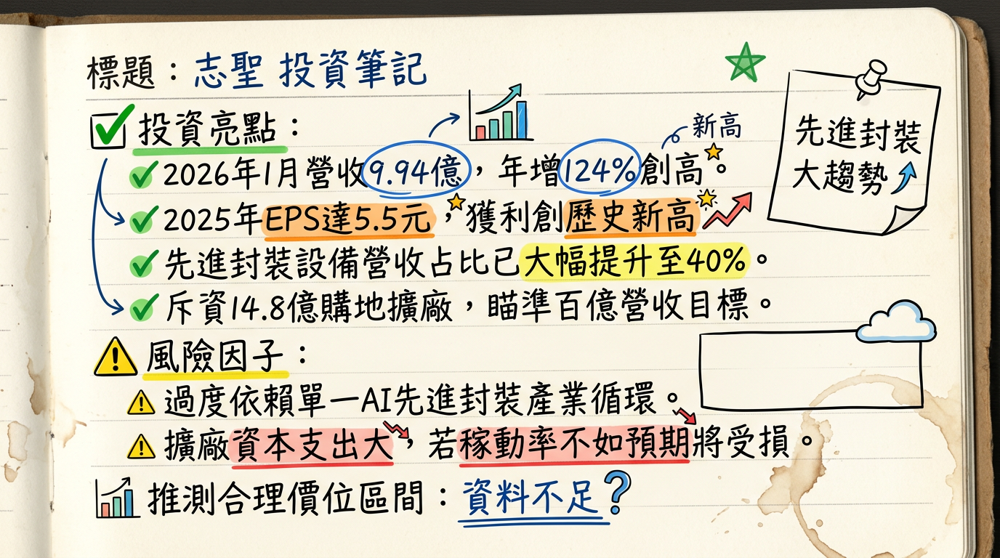

2467 志聖 深度研究報告
一句話摘要
從傳統 PCB 設備龍頭蛻變為半導體先進封裝核心供應商，受惠 CoWoS 與 HBM 強勁需求，2026 年進入營收百億與獲利倍增的爆發元年。
公司概覽
志聖（2467）以「光」與「熱」為核心技術，已成功轉型為台積電（2330）CoWoS 供應鏈關鍵成員。
營收結構（2025-2026 預估趨勢）
| 業務板塊 | 2025 營收佔比 | 2026 營收佔比 (E) | 核心產品 / 應用 |
|---|
| 半導體設備 | 50% - 60% | 65% ↑ | Carrier Bonder（暫時貼合機）、自動烘烤線、電漿清洗、HBM 壓合設備 |
| PCB 與 IC 載板 | 30% - 40% | 25% ↓ | 真空壓膜機（市佔 >90%）、HDI 剝膜機、AI 伺服器厚銅板設備 |
| 面板與其他 | 4% - 10% | 5% ↓ | FPD 設備、UV 曝光設備 |
核心競爭優勢
G2C+ 聯盟戰略綜效： 與均豪（5443）、均華（6640）組成策略聯盟，提供從研磨、檢測到貼合的「一站式」先進封裝解決方案，成功切入 Intel、Samsung 及台積電供應鏈。
製程控制技術： 具備精密壓合、貼膜與烘烤技術，尤其在 Carrier Bonder 領域能有效解決大尺寸載板在高溫製程下的翹曲（Warpage）問題，競爭力優於德日大廠。
在地化服務優勢： 較歐美廠商具備 20% - 30% 成本優勢，且 2025 Q3 啟用的北美服務中心已直接對接美系 AI 晶片客戶。
財務分析
月營收趨勢表格
| 月份 | 營收（億元） | 月增率 MoM | 年增率 YoY | 備註 |
|---|
| 2026/01 | 9.94 | +64.6% | +124.1% | 單月歷史新高，進入密集交機期 |
| 2025/12 | 6.04 | +3.65% | +39.2% | |
| 2025/11 | 5.82 | +3.83% | +9.76% | |
| 2025/10 | 5.61 | +13.13% | +50.99% | |
| 2025/09 | 4.96 | -7.96% | +48.78% | |
| 2025/08 | 5.39 | +7.37% | +50.76% | |
年度與季度趨勢
- 2024 實際： 營收 48.19 億元，EPS 4.8 元。
- 2025 實際營收： 61.02 億元（YoY +26.6%），自結 EPS 5.5 元。
- 2026 預估： 營收挑戰 80-100 億元，EPS 預估落於 8.5 - 9.54 元。
法說會重點（2025/11/24 及後續管理層更新）
- 訂單能見度： 先進封裝（CoWoS/PLP）訂單已排至 2026 年下半年。
- 新技術佈局： FOPLP（面板級扇出型封裝）已於 2025 下半年開始小量驗證，2026 年預期放量。
- 管理層 Guidance： 2026 Q1 展望「淡季不淡」，預期單季營收可望季增 25%。中長期目標為半導體年營收衝刺 100 億元。
券商觀點
| 券商名稱 | 報告日期 | 評等 | 目標價 | 2026 EPS 預估 |
|---|
| 凱基證券 | 2026/02/26 | 看多 | 410 元 | 9.54 元 |
| FactSet 綜合調查 | 2026/02/27 | 買進 | 287.5 元 (中位數) | 9.9 元 (最高) |
| 中信證券 | 2026/02/20 | 看多 | 280 元 | 8.65 元 |
| 富邦證券 | 2025/11/27 | 看多 | 270 元 | 8.22 元 |
財報深度分析
利潤率趨勢（受惠產品組合優化）
| 季度數據 | 2025 Q4 (自結) | 2025 Q3 | 2025 Q2 | 2025 Q1 |
|---|
| 毛利率 | 42.1% | 44.23% | 41.77% | 43.02% |
| 營業利益率 | 17.5% | 9.97% | 18.06% | 13.78% |
- 存貨分析： 2025 Q3 存貨週轉天數 184.83 天，較前一年拉長。此非滯銷，而是半導體設備機台案場測試週期較長，反映目前正處於「積極備料、等待驗收」的爆發前期。
- 資本支出： 2026 年預計投入 14.8 億元 購置台中南屯新廠（3,000 坪），顯示對未來需求的高度信心。
股權異動
- 可轉換公司債 (CB)： 2026/01/22 發行「志聖三 (24673)」，轉換價 246.6 元，目前處於價內，具潛在稀釋壓力，但有利於改善資產負債表。
- 庫藏股： 2026/02/25 執行庫藏股轉讓予員工 69,000 股，顯示留才決心。
- 籌碼動向： 2026/02 下半旬外資積極加碼逾 3,000 張，持股比率升至 17.3%。
產業分析
全球半導體鍵合與貼合設備競爭格局
| 廠商 | 總部 | 核心領域 | 2025 估計市佔 |
|---|
| EV Group (EVG) | 奧地利 | 晶圓鍵合 (Wafer Bonding) | 25-30% |
| Besi | 荷蘭 | 混合鍵合 (Hybrid Bonding) | 20-25% |
| 志聖 (Csun) | 台灣 | 暫時貼合 (Carrier Bonder) | 5-8% (快速成長中) |
產業趨勢
FOPLP (面板級封裝)： 2026 年市場全面啟動「由圓轉方」，志聖具備方型基板壓合優勢。
玻璃基板 (Glass Substrate)： 針對 Intel 推動的玻璃基板，志聖已開發適用之自動烘烤設備，預計 2026 下半年進入驗證。
近期催化劑
* 2026/01 營收創歷史新高（9.94 億元），驗證半導體設備進入收割期。
* 宣布 2025 年擬配發 5.5 元現金股利（盈餘分配率 100%）。
* 斥資 14.8 億元擴充 AI 先進封裝產能，目標產能提升 30-40%。
* 客戶過度集中（台積電資本支出若遞延將衝擊營收）。
* 技術更新極快，研發費用率需維持在 25% 以上的高標，恐壓縮短期營利。
⭐ 成長動能時間軸
- 2026/Q1： 先進封裝設備集中交機，1 月營收已現爆發力。
- 2026/Q1末： 簽署台中南屯新廠購地案（投資 14.8 億元）。
- 2026/Q2： 台中水湳「聯合研發中心」啟動硬體建設。
- 2026/Q4： HBM 相關壓合與電漿處理設備訂單能見度穩定，預期貢獻全年 10-15% 營收。
- 2027/Q1： 南屯新廠正式投產，支撐百億營收規模目標。
2026 展望
- 成長動能： CoWoS 產能翻倍、HBM4 需求帶動烘烤與壓合設備升級、FOPLP 新製程放量。
- 潛在風險： 本益比（PER）目前約 32-35 倍處於歷史高位、地緣政治對北美出貨毛利的微幅影響。
投資結論
營收結構優化： 高毛利半導體業務佔比突破 60%，帶動 EPS 從 5 元級距跳升至 9 元級距，評價模型應由 PCB 設備商轉向「半導體成長股」。
營運動能強勁： 2026 年 1 月營收年增 124% 僅是開端，隨產能擴大，獲利具備翻倍潛力。
財務體質健全： 100% 盈餘分配率顯示資金充裕且看好未來現金流，CB 籌資足以應付擴廠需求。
建議目標價區間： 考量 2026 年 EPS 預估 9.5 元，給予 30-35 倍本益比，建議合理投資區間為 285 - 335 元。若 FOPLP 滲透率超預期，可參考凱基目標價 410 元。
本報告由 AI 自動產生，資料來源為公開網路資訊，僅供參考，不構成投資建議。產生時間：2026-03-01 04:20
📊 資訊卡


